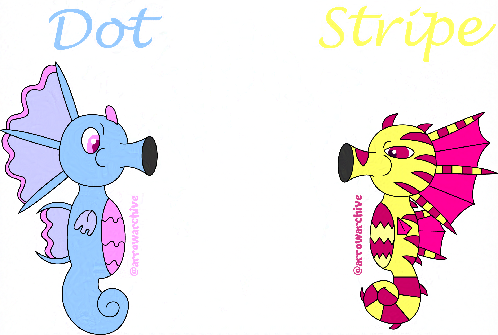

Seahorses
A few years ago, I designed some seahorses and I wanted to see how they looked digitally. I took to Adobe Illustrator (My art program at the time) and started working on them. I’m proud of how they look and colors I used for them, but I need to redraw them someday.